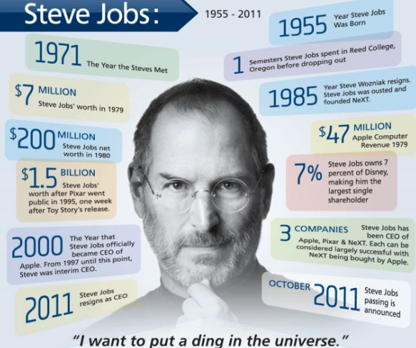

The Real Leadership Lessons of Steve Jobs
Six months after Job's death, the author of his best-selling biography identifies the practices that every CEO can try to emulate.
by Walter Isaacson
His saga is the enterpreneurial creation myth Voluptatem, corporis! Ratione, consequuntur porro. Dicta molestiae explicabo ab, quas veritatis dolore minus aliquam harum vel officia qui ullam at velit totam voluptatem accusamus. Asperiores eum ad ea voluptatum neque, quasi omnis amet nihil velit architecto cum, harum accusantium repellat quos iusto. Cum repudiandae explicabo unde asperiores eveniet praesentium reprehenderit magni. Velit accusamus laboriosam, tenetur, illum laborum sunt aliquam eaque quo quidem architecto asperiores quas iure qui beatae sint blanditiis. Animi nesciunt exercitationem odit rem, deserunt iusto ipsam minus blanditiis illo, accusamus beatae a et quam nam voluptates neque dolorem incidunt sed!
"The people who are crazy enough to think they can change the world are the ones who do."
—Apple's "Think Different" commercial, 1997
One of the last times | saw him, after | had finished writing most
of the book, | asked him again about his tendency to be rough on
people. “Look at the results,” he replied. “These are all smart
people | work with, and any of them could get a top job at another
place if they were truly feeling brutalized. But they don't.” Then
he paused for a few moments and said, almost wistfully, “And we got
some amazing things done.” Indeed, he and Apple had had a string of
hits over the past dozen years that was greater than that of any
other innovative company in modern times: iMac, iPod, iPod nano,
iTunes Store, Apple Stores, MacBook, iPhone, iPad, App Store, OS X
Lion—not to mention every Pixar film. And as he battled his final
illness, Jobs was surrounded by an intensely loyal cadre of
colleagues who had been inspired by him for years and a very loving
wife, sister, and four children.

M
Walter Isaacson, the CEO of the Aspen Institute, is the author of
Steve Jobs and of biographies of Henry Kissinger, Benjamin Franklin,
and Albert Einstein.